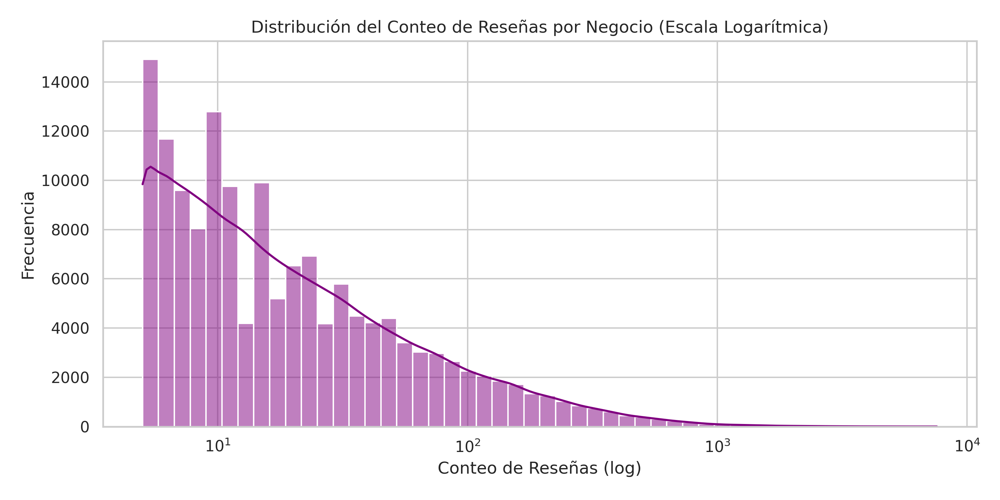
Exposición técnica de las arquitecturas aplicadas y el descubrimiento semántico de patrones en el ecosistema de Yelp, desde el preprocesamiento hasta el filtrado híbrido.
01 — Preprocesamiento y EDA
Procesar el archivo original JSON de Yelp (~5GB y ~7 millones de reseñas) ocasionaba el colapso de la memoria RAM. Para el Análisis Exploratorio (EDA) inicial, la muestra aleatoria fue nuestra solución.

01 — Preprocesamiento y EDA
Al extraer métricas y graficar la distribución de las estrellas otorgadas en la muestra, observamos claros sesgos de comportamiento humano en la plataforma Yelp.
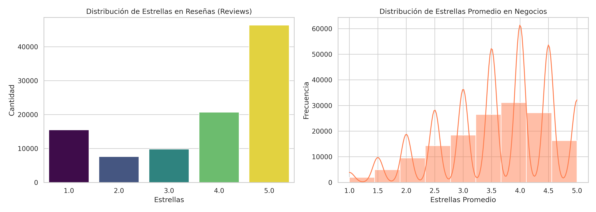
01 — Preprocesamiento y EDA
Yelp abarca miles de tipos de negocio, pero nuestro EDA reveló que la red está dominada por un ecosistema altamente gastronómico y de vida nocturna.
Categorías como "Restaurants", "Food" y "Nightlife" aplastan completamente al resto. Yelp es, fundamentalmente, una plataforma de experiencias culinarias antes que una red de servicios generales.
Al cruzar el volumen de reseñas con el rating, observamos un patrón triangular: los restaurantes con miles de reseñas tienden a estabilizarse en un sólido 4 estrellas, erradicando los extremos engañosos.
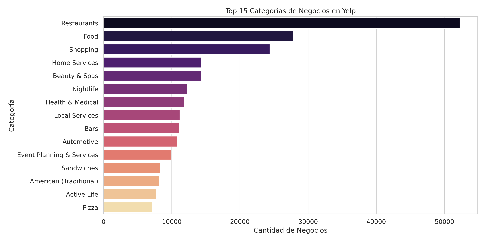
01 — Preprocesamiento y EDA
El conjunto de datos académicos de Yelp no engloba todo EE.UU. uniformemente. Descubrir la distribución espacial es clave para el análisis de sesgos locacionales.
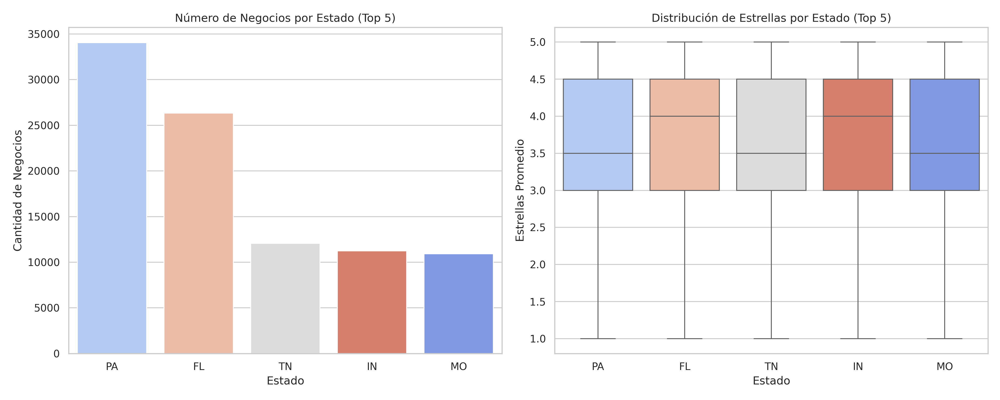
01 — Preprocesamiento y EDA
Para descubrir el filtro de "k-core" óptimo, no podíamos usar una muestra. Computamos el grado de los millones de nodos iterando línea por línea la base de datos completa de 5GB en crudo.
Se utilizaron diccionarios `defaultdict` en Python para acumular los conteos al vuelo, procesando todo el inmenso archivo en segundos sin agotar la RAM.
Al trazar la retención vs umbral K, medimos la distancia máxima ortogonal a la secante para hallar matemáticamente el "Codo" de la curva.
La matemática demostró que en k=3 se desecha el ruido inerte limitando la pérdida de reseñas totales.
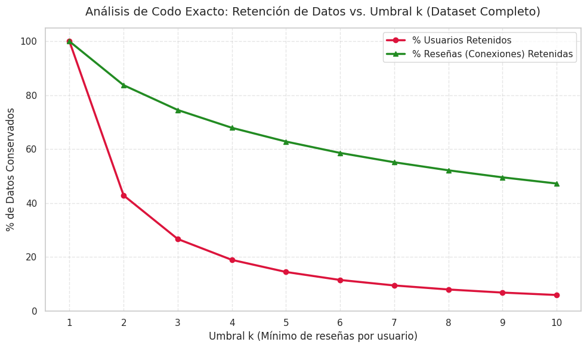
01 — Preprocesamiento y EDA
Contrariando el sugerido matemático (k=3), la decisión técnica basada en el "State of the Art" de recomendadores dictaminó imponer un filtro riguroso de 10-core.
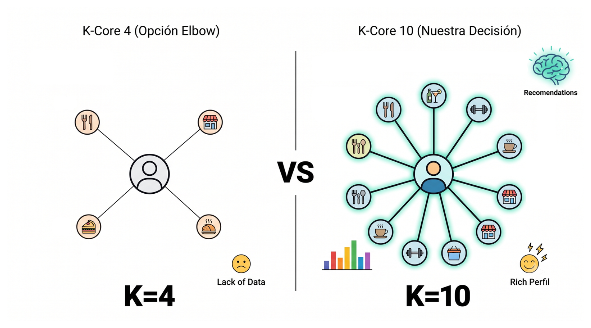
02 — Grafos
Para descubrir la jerarquía interna y las agrupaciones naturales de la red, implementamos algoritmos nativos de Enlaces y Comunidades directamente sobre el grafo bipartito.
Implementamos iterativamente PageRank para rastrear la influencia global y HITS para modelar la co-dependencia entre usuarios influyentes (Hubs) y negocios prestigiosos (Authorities).
Aplicamos el algoritmo de Louvain para particionar la red, maximizando la densidad de interacciones internas frente a las externas de manera no supervisada.
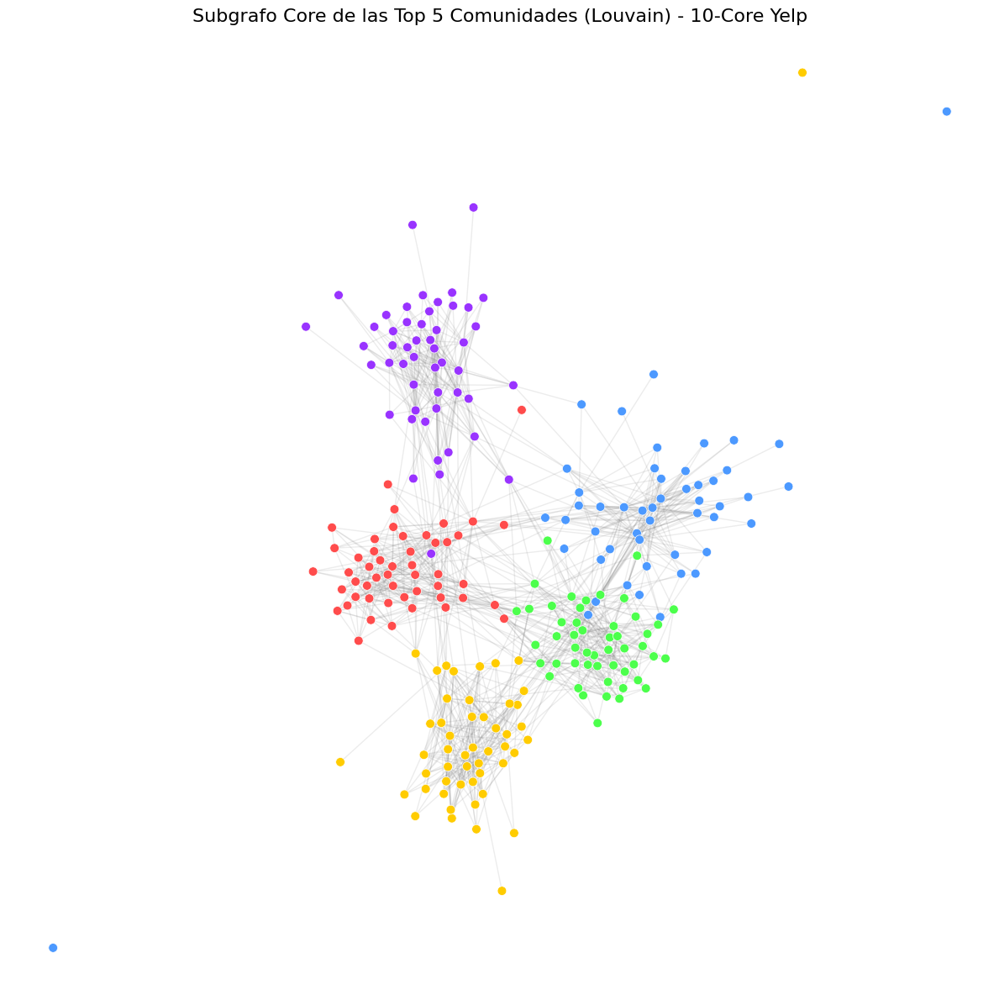
02 — Grafos
Los modelos de ranking arrojaron una baja correlación de Spearman (~0.46) en negocios y nula en usuarios, revelando una contradicción fundamental en la teoría de redes.
02 — Grafos
El algoritmo de Louvain detectó 228 comunidades. Una modularidad de 0.779 demuestra que las relaciones comerciales de Yelp están extremadamente fragmentadas.
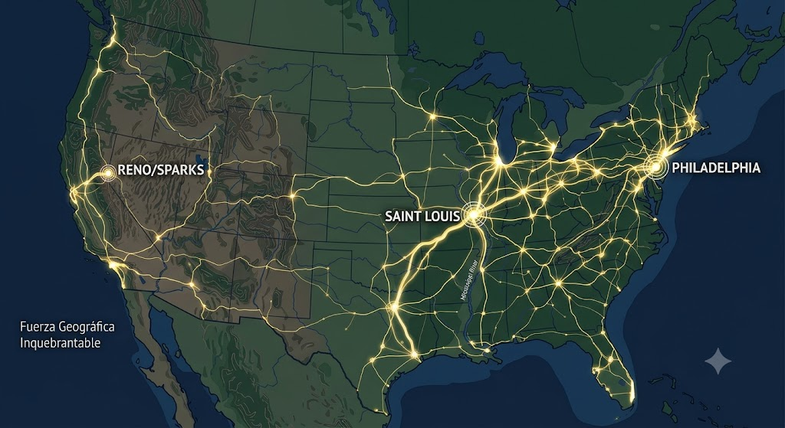
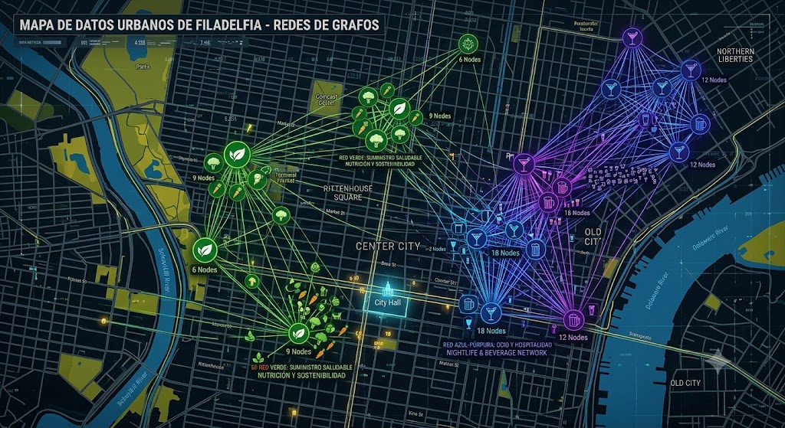
03 — Clustering y Reducción de la dimensionalidad
Para agrupar los negocios de forma inteligente, no podíamos confiar en variables simples. Diseñamos un espacio multidimensional que fusiona categorías y comportamiento.
Extraemos las 20 categorías más frecuentes y aplicamos PCA con un umbral de varianza del 90% para colapsar variables correlacionadas en componentes lineales principales.
Descomponemos la matriz User-Item para extraer embeddings de negocio latentes, alineando el comportamiento implícito de los usuarios con las variables del PCA.
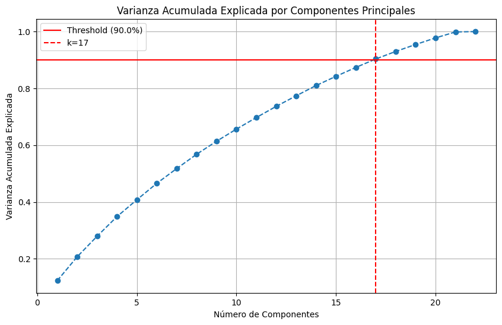
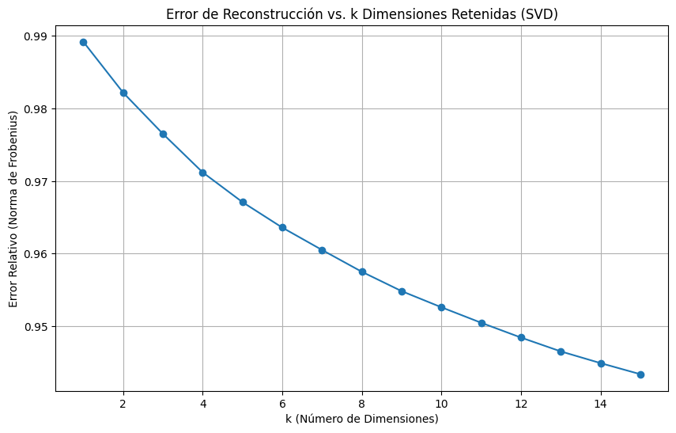
03 — Clustering y Reducción de la dimensionalidad
Combinar PCA y SVD resolvió un conflicto crítico: un spa de 5 estrellas y una pizzería de 5 estrellas no pertenecen al mismo segmento comercial.
03 — Clustering y Reducción de la dimensionalidad
Las métricas matemáticas puras pueden engañar de forma crítica. CURE arrojó el mejor Coeficiente de Silueta, pero su segmentación resultó completamente inútil.
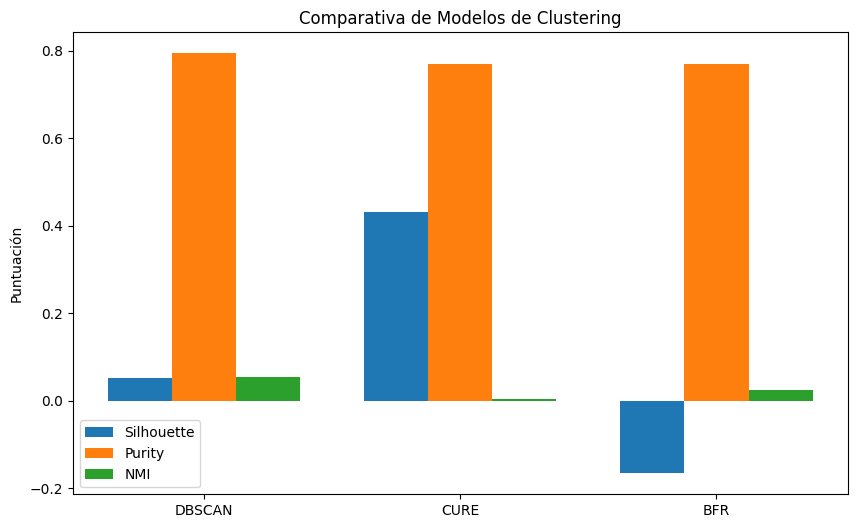
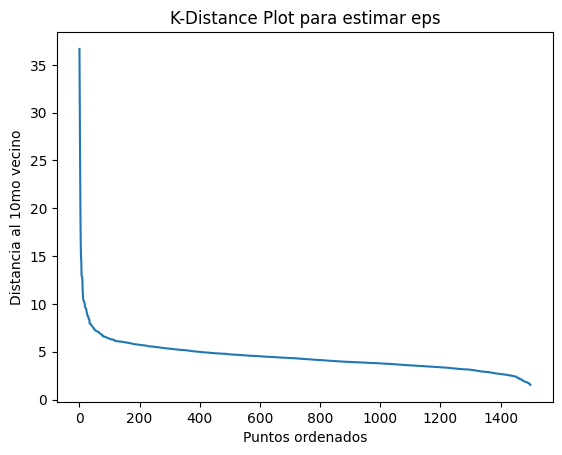
03 — Clustering y Reducción de la dimensionalidad
DBSCAN (1.5%) y BFR (1.2%) aíslan de forma natural aquellos negocios que no siguen la norma del comportamiento masivo, identificando extremos atípicos.
03 — Clustering y Reducción de la dimensionalidad
Determinamos el número óptimo de segmentos evaluando la inercia (Suma de Errores Cuadráticos) a través del Método del Codo, identificando K=5 como el punto de equilibrio estratégico.
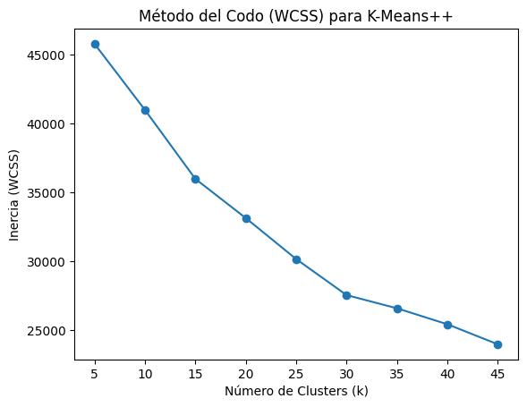
03 — Clustering y Reducción de la dimensionalidad
K-Means++ ($K=5$) se corona como la mejor técnica para este dataset: es el único algoritmo que ofrece una segmentación macro balanceada, estable (silueta de 0.4244) y directamente aplicable al negocio.
04 — Sistemas de Recomendación
La culminación predictiva del proyecto: predecir matemáticamente el *rating* que le dará un usuario a un negocio combinando el comportamiento masivo y los perfiles de contenido.
Construimos perfiles de negocio analizando sus categorías (texto) como vectores TF-IDF, logrando encontrar negocios similares temáticamente aunque nadie los haya visitado aún.
Compara el historial (10-core) utilizando Similitud del Coseno. Pondera las calificaciones de los "vecinos" estadísticos del usuario para predecir si un local le gustará.
04 — Sistemas de Recomendación
Dividimos el set en Train/Test y medimos la capacidad del sistema para "adivinar" los verdaderos negocios ocultos del Test Set frente a métodos estáticos (Baselines).
05 — Streams de Datos
Parte V — Análisis de reseñas Yelp en tiempo real: ventanas deslizantes, conteo aproximado y estimación de bits en ventana.
01 — Técnica
El stream de reseñas se divide en franjas temporales fijas (1h · 4h · 1 día). Cada ventana mantiene acumuladores count / sum / sum_sq que se emiten al cerrarse — sin guardar ningún evento individual.
Gráfico 1 — avg stars por ventana
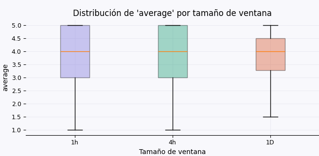
Gráfico 2 — densidad de reseñas
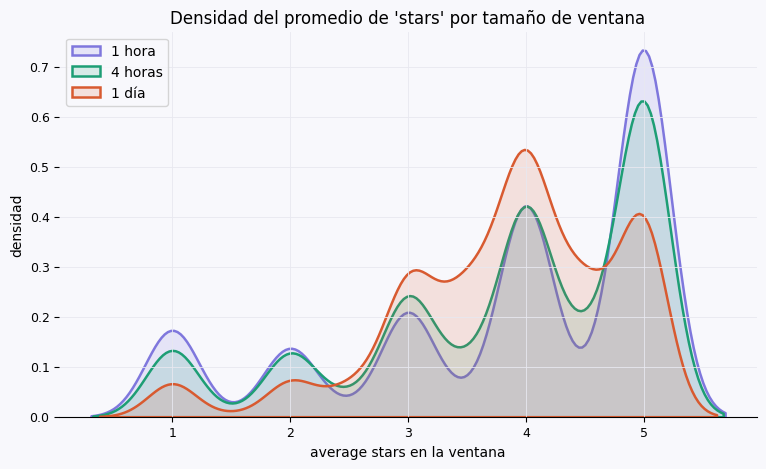
05 — Streams · Ventanas Deslizantes
Patrones horarios, ciclos estacionales y distribuciones de densidad comparadas entre las tres ventanas de tiempo.
Gráfico 3 — Dashboard métricas por ventana
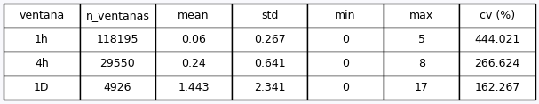
Gráfico 4 — Media móvil 30 días
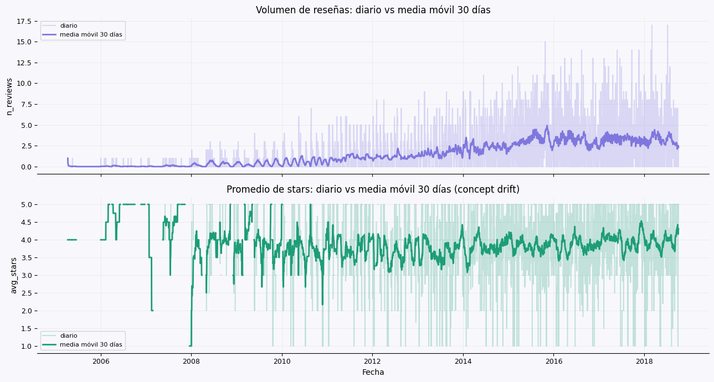
Gráfico 5 — Patrones horarios (ventana 1h)
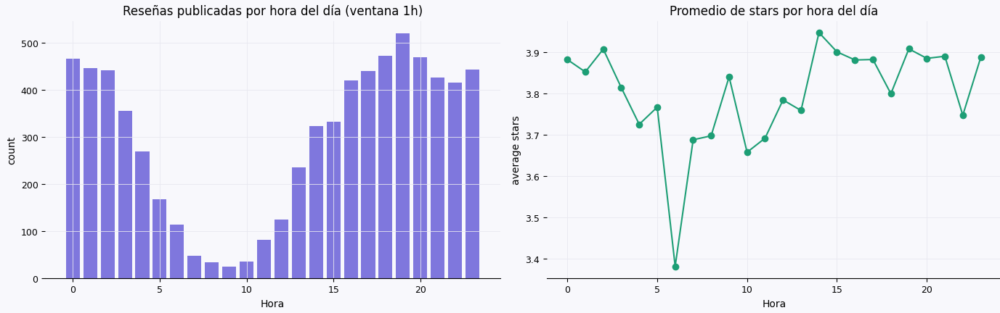
Gráfico 6 — Densidad ventana 1h por hora
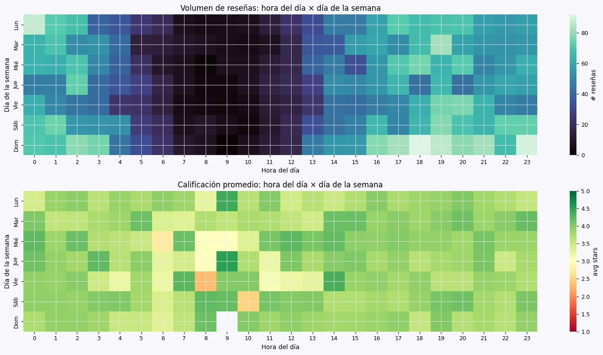
05 — Streams · Ventanas Deslizantes
Ciclos mensual/anual y distribución de densidad de avg_stars por separado para cada tamaño de ventana.
Gráfico 7 — Ciclos estacionales por mes
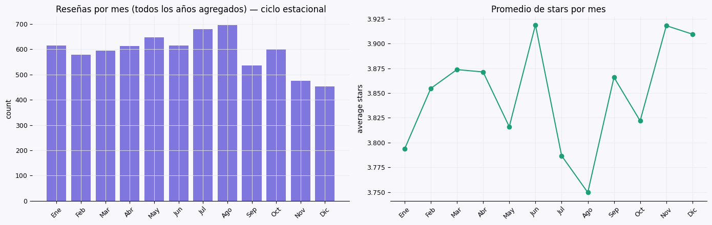
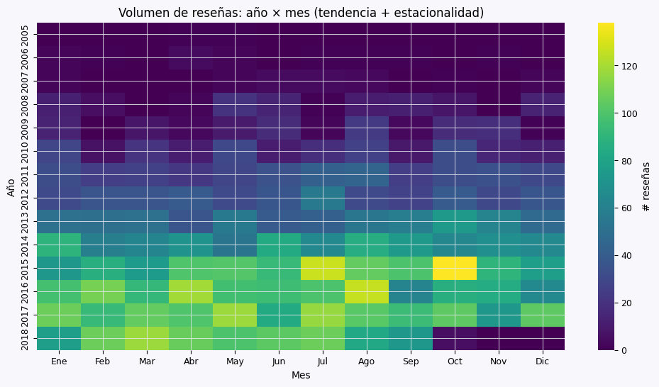
Gráfico 8 — Densidad avg_stars en las 3 ventanas
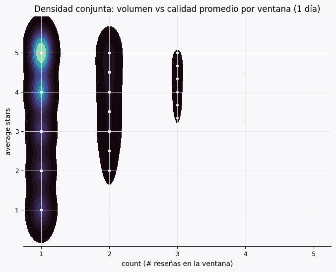
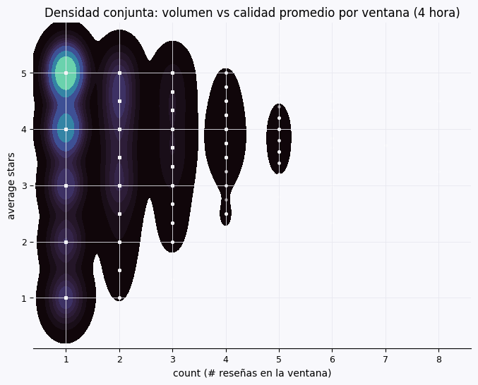
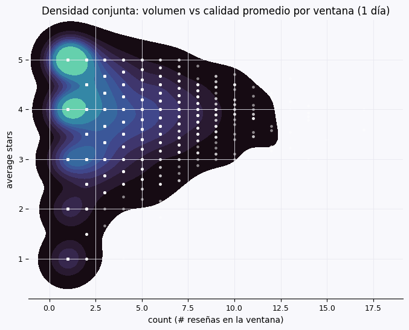
Insights — Ventanas Deslizantes
05 — Streams · Conteo Aproximado
Estima la frecuencia de reseñas por business_id procesando el stream elemento a elemento. Matriz fija de contadores — sin tabla hash proporcional al número de elementos únicos.
Insights — Count-Min Sketch
05 — Streams · Count-Min Sketch
Análisis gráfico del error, trade-offs de parámetros y comportamiento real vs garantías teóricas.
Gráficos 9 · 10 · 11 — Count-Min Sketch
Todos los puntos caen sobre o por encima de y=x. Error concentrado cerca de 0, muy por debajo de ε·N.
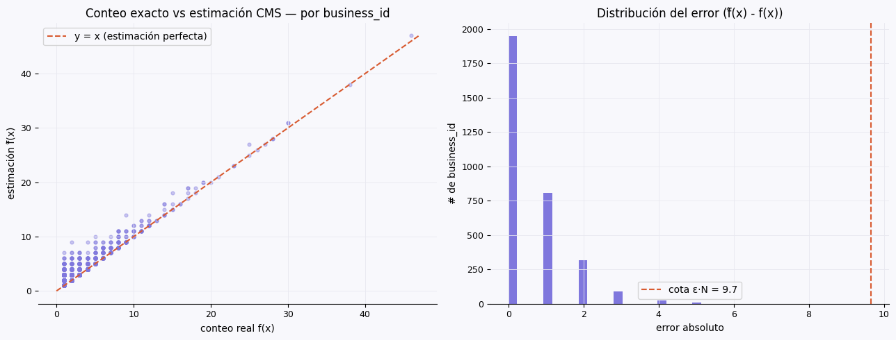
A mayor w → menor ε → menor error garantizado a costa de más memoria.
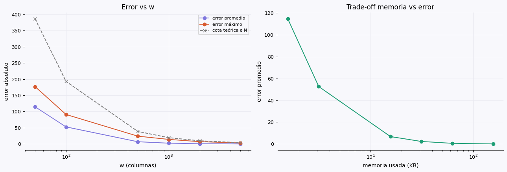
A mayor k → δ = e⁻ᵏ decrece exponencialmente. Eje dual: error máximo vs probabilidad de fallo.
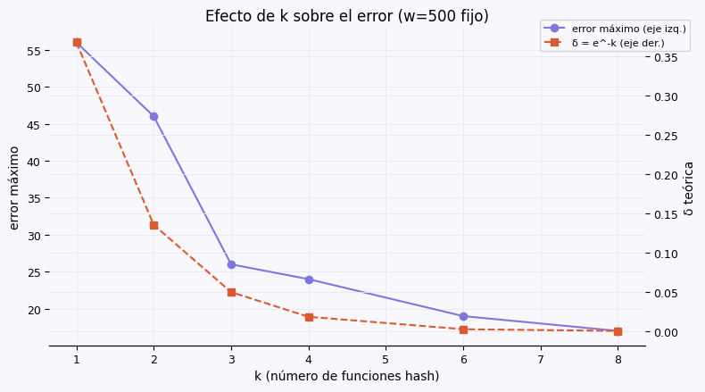
05 — Streams · Ventana Binaria Reciente
¿Cuántas de las últimas N reseñas fueron "útiles"? — sin guardar los N bits del historial. Memoria O(log² N) en lugar de O(N).
(t, size=1). Bit=0 → no crear bucket.timestamp < t − N.2s.Σ sizes − size_último / 205 — Streams · DGIM
Análisis empírico del algoritmo DGIM frente al conteo exacto, y diferencias clave con Count-Min Sketch.
Gráfico 12 — DGIM vs conteo exacto
Dashboard 3 paneles: estimación vs real · % error · # buckets activos a lo largo del stream.
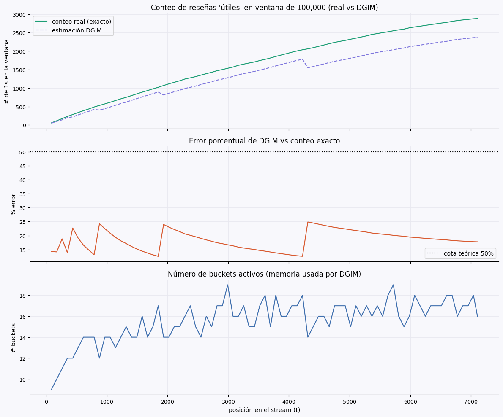
Gráfico 13 — Sensibilidad al tamaño de ventana N
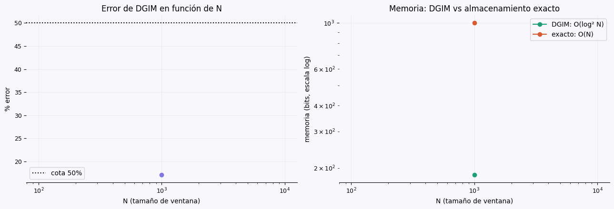
DGIM vs Count-Min Sketch — diferencias clave
| Aspecto | Count-Min Sketch | DGIM |
|---|---|---|
| Pregunta | ¿Cuántas veces aparece x en todo el stream? | ¿Cuántos 1s en las últimas N posiciones? |
| Input | Cualquier elemento (string, ID…) | Stream binario {0, 1} |
| Memoria | O(k·w) fija | O(log² N) |
| Ventana | Todo el stream acumulado | Últimos N eventos solamente |
| Error | ≤ ε·N (con prob. 1−δ) · nunca subestima | < 50% · puede sobrestimar o subestimar |
| Cuándo usarlo | Ranking de frecuencias globales (top-k, heavy hitters) | Monitoreo en tiempo real de comportamiento reciente |
Insights — DGIM
Yelp nos demostró una lección rotunda: aplicar algoritmos de recomendación predictiva pesados en la Parte IV es una pérdida de tiempo si la Parte I es un mar de ruido. La calidad estructural dicta el triunfo del sistema.